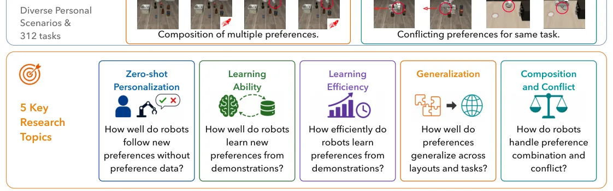
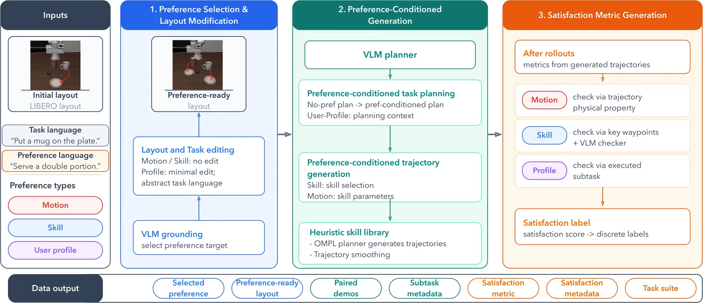
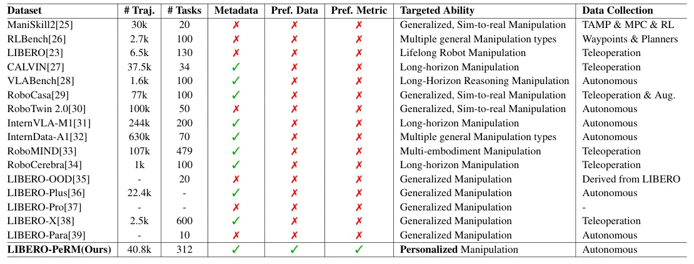
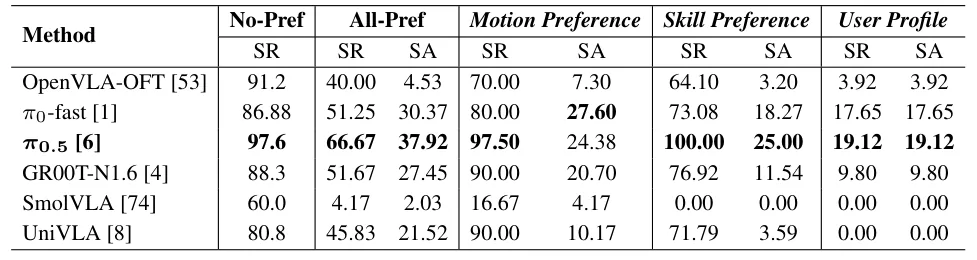

O Desafio da Personalização em Robótica
A robótica doméstica promete transformar o cotidiano, permitindo que agentes executem tarefas complexas a partir de instruções em linguagem natural. No entanto, a mera conclusão de uma tarefa nominal não é suficiente para a implantação prática. Robôs generalistas precisam alinhar suas execuções com as preferências, hábitos e restrições individuais dos usuários. Isso define a manipulação personalizada (PeRM), onde as preferências introduzem requisitos de execução diversos para o mesmo objetivo. Por exemplo, colocar uma caneca na mesa pode exigir uma orientação específica da alça ou um local de pouso designado.
Embora os modelos Vision-Language-Action (VLA) tenham mostrado forte generalização em tarefas genéricas, falta um benchmark controlado para separar o sucesso da tarefa da satisfação da preferência. O paper apresenta o LIBERO-PeRM, um benchmark focado no aprendizado de preferências para agentes encorpados. Ele investiga cinco questões centrais: personalização zero-shot, aprendizado de preferências únicas, eficiência de aprendizado, generalização e composição de preferências sob conflitos.

Metodologia: Definindo e Medindo Preferências
O LIBERO-PeRM propõe uma formulação controlada e uma taxonomia de preferências observáveis em simulação. As preferências são divididas em três categorias: movimento (como a ação é executada), habilidade (estratégia de manipulação) e perfil do usuário (escolhas semânticas ou de objetos). Essa formulação é restrita a preferências expressáveis em linguagem que podem ser instanciadas no LIBERO sem alterar o objetivo da tarefa. Isso permite avaliação automática e reutilização entre tarefas.
O pipeline de geração de dados é construído sobre o framework LIBERO. Ele gera demonstrações pareadas, com e sem preferências, passando pela seleção de preferências, condições, subtarefas e trajetórias. O sistema deriva métricas de satisfação e metadados ricos, incluindo imagens de subobjetivos e estatísticas de trajetória. Diferente de benchmarks anteriores, o LIBERO-PeRM foca em demonstrações em grande escala condicionadas por preferência, permitindo uma avaliação granular do comportamento do agente.

Métricas de Sucesso e Satisfação
Para avaliar os modelos, são utilizadas duas métricas principais: Taxa de Sucesso da Tarefa (SR) e Satisfação da Preferência (SA). O SR mede a conclusão nominal da tarefa. O SA mede quão bem uma preferência foi satisfeita, utilizando um Rótulo de Satisfação Discreto que varia de 0 a 1. A métrica SA é calculada apenas para episódios em que a tarefa foi bem-sucedida, garantindo que a satisfação da preferência seja um complemento ao sucesso funcional.
Em cenários de conflito, políticas específicas são adotadas. Para conflitos entre tarefa e preferência, a conclusão da tarefa original tem prioridade. Para conflitos entre preferências, a SA é computada usando a maior pontuação de satisfação entre as duas preferências conflitantes, com episódios de falha na tarefa contribuindo com zero. Essas convenções de pontuação testam a execução sob instruções inconsistentes, mas não avaliam a detecção de conflitos ou a ponderação de preferências pelo agente.

Resultados: Falha no Zero-Shot
A primeira investigação (Q1) avalia se políticas VLA prontas para uso (off-the-shelf) podem seguir preferências sem treinamento específico. Seis políticas foram testadas, incluindo OpenVLA-OFT, π0-fast, π0.5, GR00T-N1.6, SmolVLA e UniVLA. Os resultados mostram que, embora as edições mínimas de layout preservem o desempenho zero-shot na tarefa base (com π0.5 atingindo 97.6% de SR), os modelos falham em seguir as preferências condicionadas.
O π0.5, por exemplo, atinge altas taxas de sucesso em Preferências de Movimento e Habilidade (97.50% e 100.00% de SR), mas baixa satisfação de preferência (24.38% e 25.00% de SA). Isso indica que o modelo completa a tarefa ignorando a preferência. Executar com um Perfil de Usuário é ainda mais difícil, pois altera o objeto alvo ou a escolha semântica, reduzindo drasticamente o SR para políticas mais fracas e levando a satisfações próximas de zero.

Aprendizado Supervisionado e Fine-Tuning
A segunda investigação (Q2) explora se o fine-tuning supervisionado (SFT) pode ensinar os modelos a satisfazer preferências em tarefas e layouts vistos. Utilizando LoRA (Low-Rank Adaptation), os autores compararam treinamento sequencial e misto. O treinamento sequencial, que ajusta primeiro no LIBERO base e depois no LIBERO-SinglePref, degrada o desempenho na tarefa base (No-Pref SR cai para 52.33%) e na satisfação da preferência.
Em contraste, o treinamento misto (Mix-LoRA), que combina dados do LIBERO base e do LIBERO-SinglePref, retém melhor o comportamento sem preferência (91.00% de SR) e melhora a robustez a prompts contextuais. No entanto, o treinamento misto enfraquece o aprendizado de preferências de movimento em comparação com o LoRA apenas de preferência. Isso revela um trade-off dependente da categoria: o treinamento misto preserva a generalidade, mas pode sacrificar a especialização em preferências específicas.
Generalização e Composição
A generalização de preferências aprendidas é avaliada em três níveis: in-domain, generalização de tarefa/layout e generalização de nível de preferência. Os resultados indicam que a generalização para layouts não vistos e tarefas diferentes permanece difícil. A satisfação da preferência cai significativamente quando o layout muda, sugerindo que os modelos dependem fortemente de correlações visuais específicas do ambiente de treinamento.
A composição de preferências (Q5) mostra que os modelos podem combinar múltiplas preferências parcialmente, mas a decomposição falha. Em cenários de conflito, a execução muitas vezes degrada em vez de produzir uma resolução clara. O benchmark não testa a detecção de conflitos ou a decisão de pedir orientação ao usuário, focando apenas na execução resultante. Isso destaca uma lacuna significativa na capacidade dos modelos atuais de lidar com instruções ambíguas ou contraditórias.
Limitações e Direções Futuras
O LIBERO-PeRM tem limitações claras. Ele instancia preferências predefinidas, expressáveis em linguagem e mensuráveis automaticamente em simulação. Isso exclui inferência implícita de preferências, histórico de interação, sinais não linguísticos e preferências abertas ou em evolução. As demonstrações geradas podem conter vieses específicos do pipeline e da biblioteca de habilidades, apesar da randomização de estados iniciais e revisão humana.
O conjunto de composição testa apenas duas preferências, e o conjunto de conflitos não avalia a detecção ou esclarecimento. Estudos longitudinais com usuários reais ou avaliação em robôs físicos não foram incluídos. Trabalhos futuros podem estender o benchmark para configurações com três ou mais preferências, sinais não linguísticos, aquisição de preferências com humano no loop, ponderação de preferências e decisões de quando perguntar ao usuário.
Conclusão
O LIBERO-PeRM estabelece um novo padrão para a avaliação de manipulação personalizada, isolando o aprendizado de preferências de tarefas genéricas. Os resultados mostram que, embora os modelos VLA sejam robustos em tarefas nominais, eles falham em personalização zero-shot. O SFT torna as preferências aprendíveis, mas o treinamento misto oferece um equilíbrio necessário entre retenção de comportamento base e adaptação. A generalização para novos ambientes e a resolução de conflitos permanecem como desafios abertos, indicando que a verdadeira personalização robótica ainda está em estágio inicial.
O que fica
- Modelos VLA falham em personalização zero-shot, completando tarefas mas ignorando preferências.
- SFT torna preferências aprendíveis; treinamento misto preserva melhor o comportamento base.
- Generalização para layouts inéditos e resolução de conflitos permanecem desafios abertos.
Paper original: LIBERO-PeRM: Benchmarking Personalized Robotic Manipulation
Comentários
Nenhum comentário ainda. Seja o primeiro.